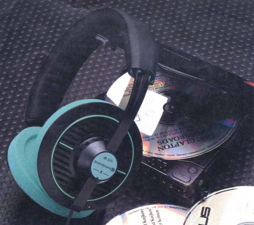

DT-325

■価格 12,000円■型式 ダイナミック型セミオープンタイプ■振動板 ■インピーダンス 40Ω■再生周波数帯域 20-20,000Hz■許容入力 100mW■感度 95dB/mW■コード ■重量 65g（コード含まず）■発売 ？■販売終了 ？■備考 代理店が松田通商のカタログで登場ロー・インピーダンス・トランデューサー設計 3.5�oコネクター＋アダプター
ベイヤーのインデックスへ